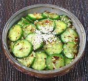

|
Cucumber Salad - BanchanKorea - Oi-muchim | ||||
| Makes: Effort: Sched: DoAhead: |
6 ban * 40 min Yes |
This salad is one of the many "banchan" (tiny side dishes) served with Korean meals. It is very popular, particularly in the summer. Banchans are usually served in rather small portions, but this recipe would also serve as 2 or 3 regular salads. | |||
|
10 1/2 ----- 1 1 2 2 1/3 1 1 ----- |
oz t --- cl t t t t t --- |
Cucumbers (1) Salt -- Dressing Scallions Garlic Korean Chili Flake (2) Rice Vinegar Sugar Sesame Seeds (3) Sesame Oil, dark ---------------- |
Make - (40 min - 10 min work)
|